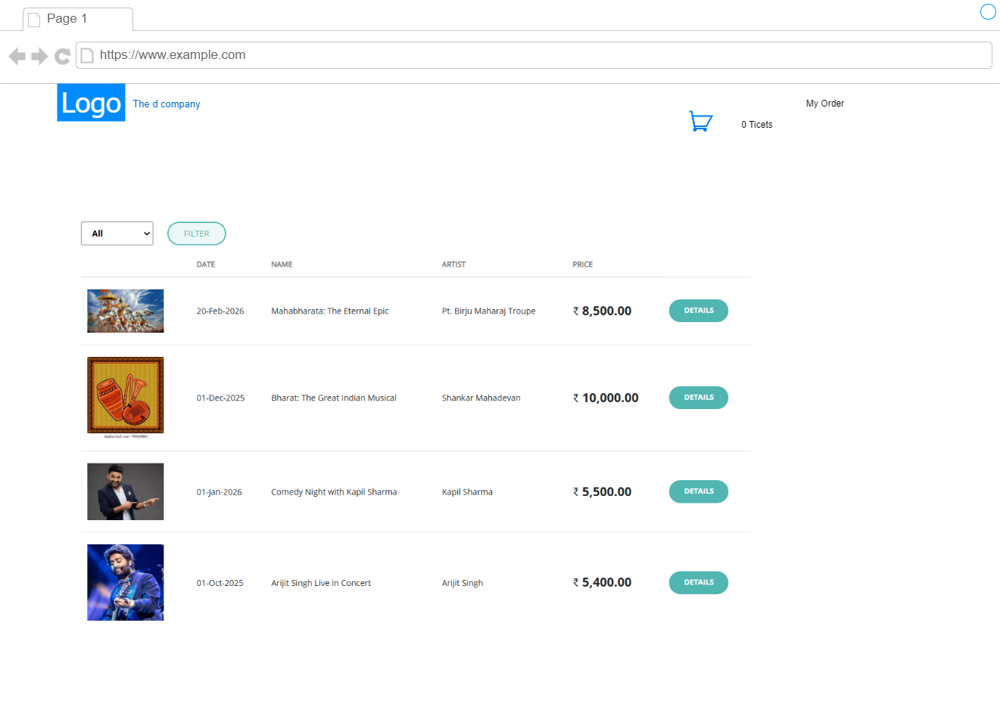
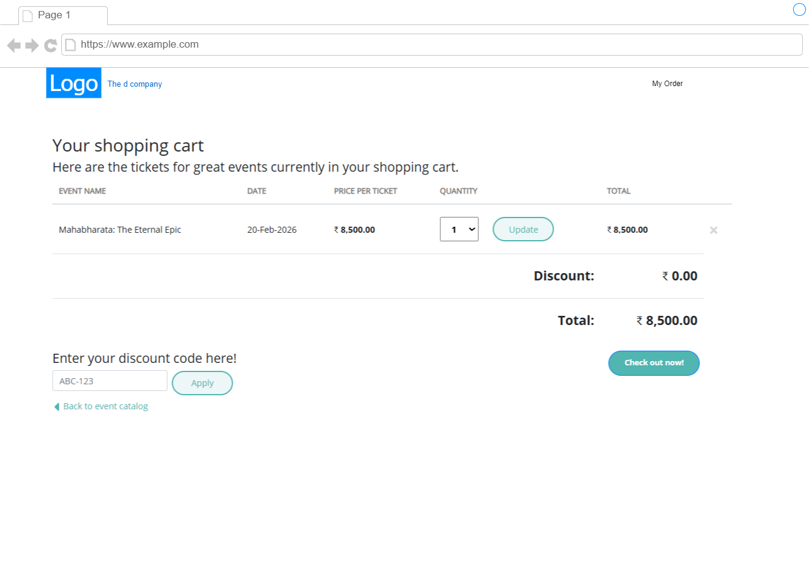
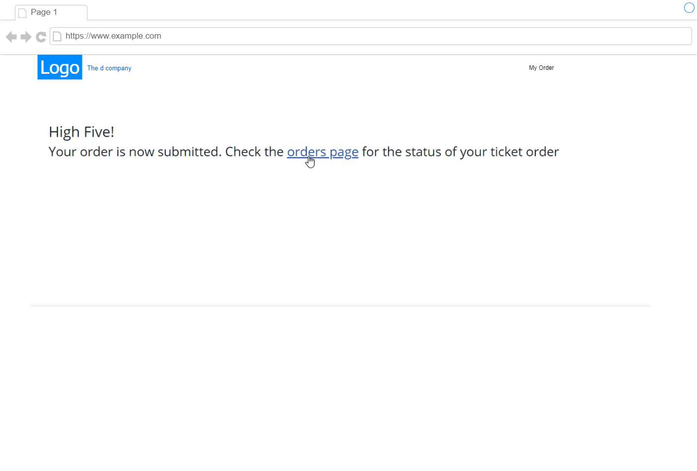
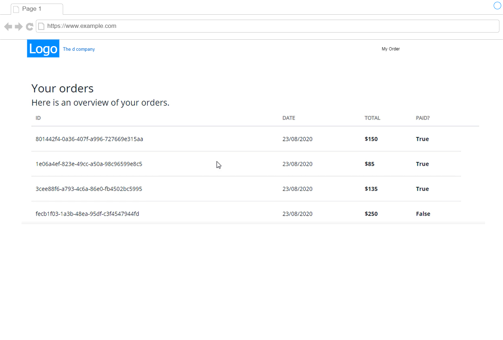
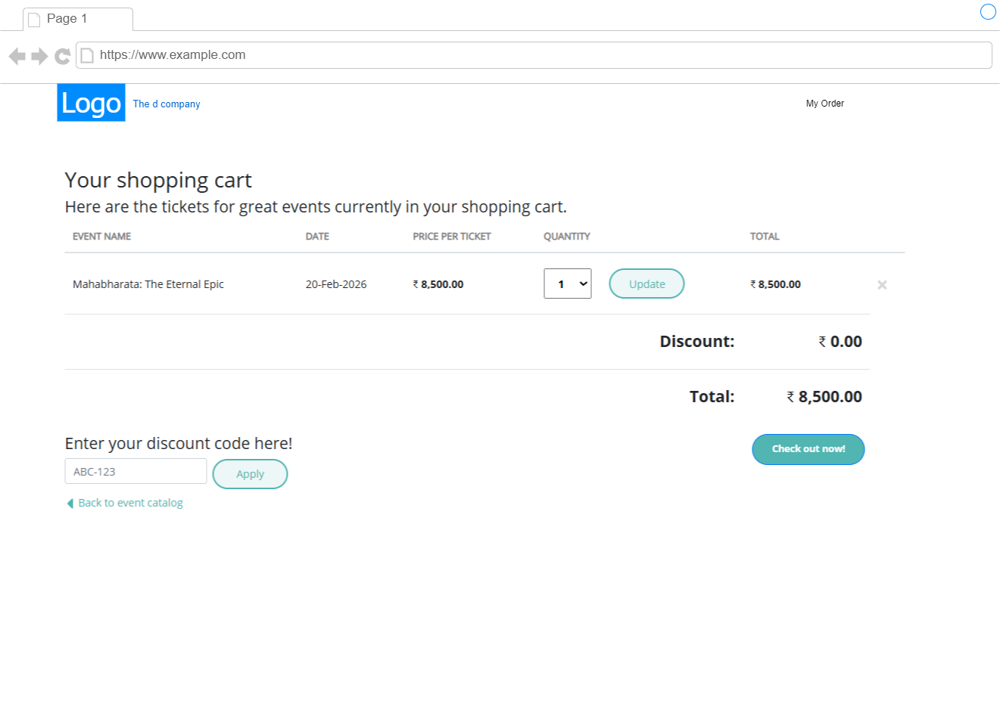
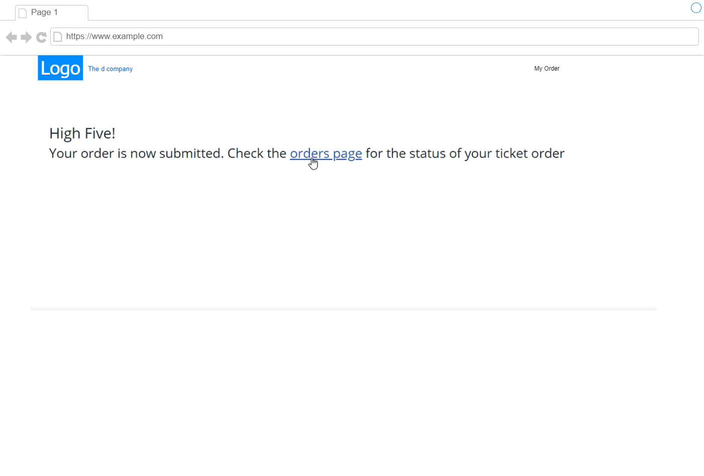
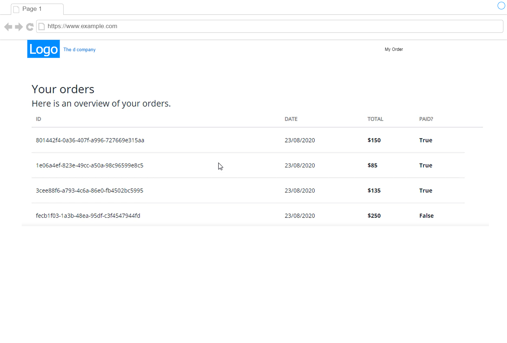

2.2 Business Case
📘 Business Case: EvenTicket – Event Booking Microservice Platform
🎯 Project Overview
EvenTicket is an online platform that allows users to search, book, and manage tickets for events like concerts, sports, workshops, and theater shows. The system should handle high traffic, support real-time availability, and ensure secure payment processing.
✅ Functional Requirements (FR)
-
User Management
-
Register/login (with email/password or social login)
-
View profile, booking history
-
Event Management
-
Event organizers can create, update, and delete events
-
Each event includes details (title, date, venue, tickets, price)
-
Event Search & Discovery
-
Users can search by category, location, or date
-
Filter by availability, price range
-
Ticket Booking
-
Book one or more tickets
- Lock ticket inventory temporarily during booking
-
Handle booking timeout and expiry
-
Payments
-
Integrate with a payment gateway (mocked for now)
-
Generate order confirmation on successful payment
-
Notifications
-
Send booking confirmation via email/SMS
-
Notify users of event updates/cancellations
-
Admin Portal (optional)
-
View reports, manage users/events/bookings
🚫 Non-Functional Requirements (NFR)
| Category | Requirement |
|---|---|
| Scalability | System must handle 1000+ concurrent bookings per second |
| Availability | 99.9% uptime SLA |
| Performance | API response time < 500ms for most operations |
| Security | Secure API access (OAuth2), input validation, payment encryption |
| Logging | Centralized logging and error tracking for all services |
| Monitoring | Real-time metrics and alerts using Prometheus + Grafana (or Azure Monitor) |
| Data Integrity | Prevent double-booking of tickets using locking or event-driven updates |
| Resilience | Use retries and circuit breakers for dependent services |
| Extensibility | Should support new features like discounts, coupons, loyalty programs |
🧱 Microservices (Suggested)
| Service Name | Responsibilities |
|---|---|
| Event Service | Create/manage event listings |
| Payment Service | Integrate with external payment gateway |
| Gateway API | Entry point to all APIs, handles routing and authentication |
📩 Event-Driven Architecture (Example Events)
| Event | Producer | Consumers |
|---|---|---|
EventCreated |
Event Service | Search Service |
BookingExpired |
Booking Service | Ticket Release Handler |
🛠 Tech Stack (Example)
- Backend: .NET Core (Web API), Azure Service Bus for events
- Frontend: .NET Core (MVC)
- Database: SQL Server / CosmoDb (per service)
- API Gateway: YARP (for routing)
- Containerization: Docker, Docker Compose for local dev
- Deployment: Kubernetes (minikube/kind for dev), or Azure AKS or GCHR
- CI/CD: GitHub Actions
- Monitoring: Prometheus, Grafana, ELK Stack
🧪 Testing Strategy
- Unit tests for services
- Integration tests for inter-service communication
- Load testing using k6 or JMeter
📈 Future Enhancements
- User reviews & ratings
- QR code-based digital ticketing
- Loyalty rewards system
- Integration with calendar/reminder services
- Event sponsorships and advertisements
Wireframe

 





Context Diagram
Module Decomposition Diagram
Component Diagram
Deployment Diagram
How System works
Why Microservices for EvenTicket?
Business Case: Event Booking Platform
EvenTicket needs to support a variety of independent but connected features — user management, event discovery, ticket booking, payments, notifications, etc. Microservices architecture is well-suited for this type of system.
✅ Benefits of Microservices for EvenTicket
1. Separation of Concerns
Each service handles only one responsibility:
UserServicemanages users.BookingServicehandles ticket availability.PaymentServicefocuses on transactions.
➡️ This makes the system easier to understand, maintain, and evolve.
2. Scalability
- Some services like
SearchServiceandBookingServicemight get more traffic. - Microservices allow independent scaling — scale only the services that need it, saving cost and improving performance.
3. Technology Flexibility
- You can build services in different languages if needed (e.g., .NET for Booking, Node.js for Notification).
- Allows teams to choose the best tools for each job.
4. Faster Development & Deployment
- Teams can work independently on different services.
- Deploy a new version of
PaymentServicewithout touchingEventService.
➡️ Enables faster feature rollout and reduced risk of breaking the whole system.
5. Fault Isolation
- If
NotificationServicefails, booking still works. - Reduces the risk of system-wide failure.
6. Event-Driven Capabilities
- Microservices fit naturally into an event-driven system.
- Example: After a successful booking,
BookingServicecan emit aTicketBookedevent → other services like Notification or Analytics can react asynchronously.
7. Easy to Extend
- Adding new features like coupons, loyalty points, or QR code validation?
- Just add new services without changing the existing ones.
🛠️ Microservices Match the Business Complexity
EvenTicket involves multiple domains:
- Users
- Events
- Orders/Bookings
- Payments
- Notifications
Each has its own business logic, data model, and scaling requirements — making it a perfect candidate for microservices.
Port numbers for Microservice
Microservices | Local Env | Docker Env | Docker Inside |---|---|---|---| Event Catalog | 5000-5050 | 6000-6050 |8080-8081 | Shopping | 5001-5051 | 6001-6051 |8080-8081 | Discount | 5002-5052 | 6002-6052 |8080-8081 | Ordering | 5003-5053 | 6003-6053 |8080-8081 | Payment | 5004-5054 | 6004-6054 |8080-8081 | External Payment | 5005-5055 | 6005-6055 |8080-8081 | API Gateway | 5006-5056 | 6006-6056 |8080-8081 |